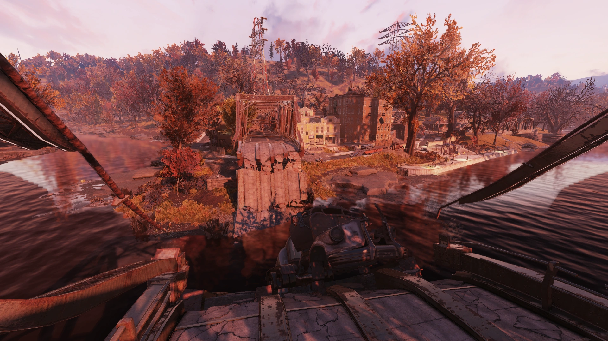
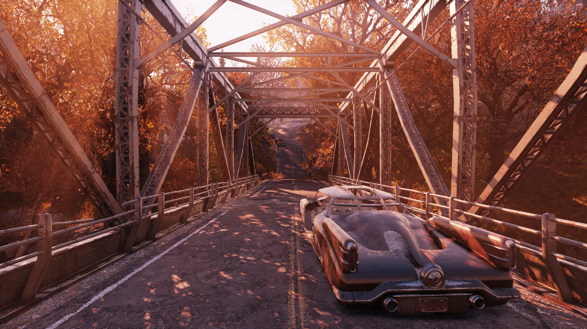
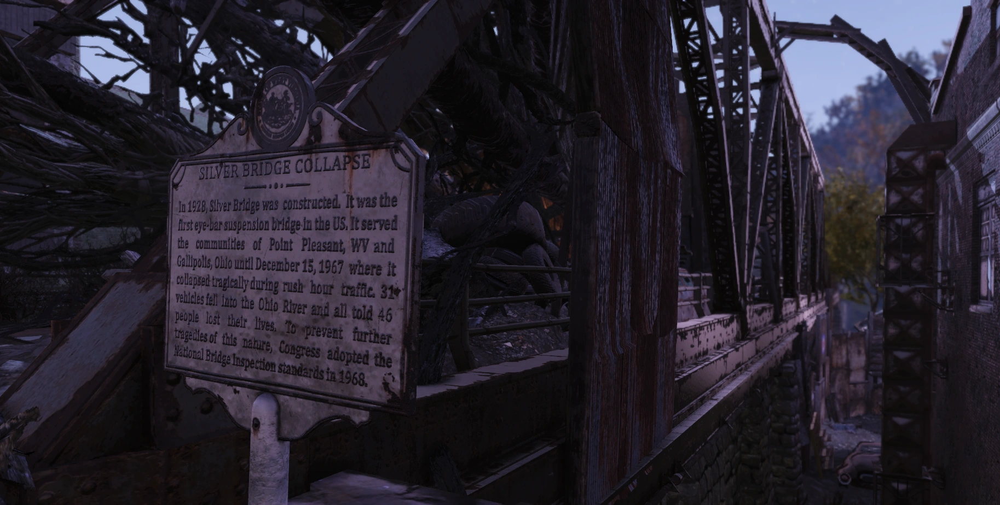
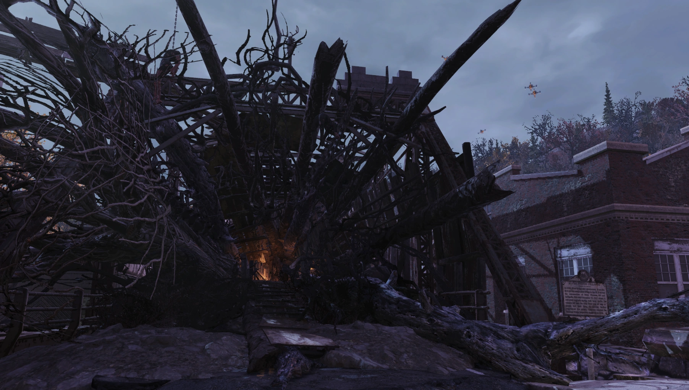
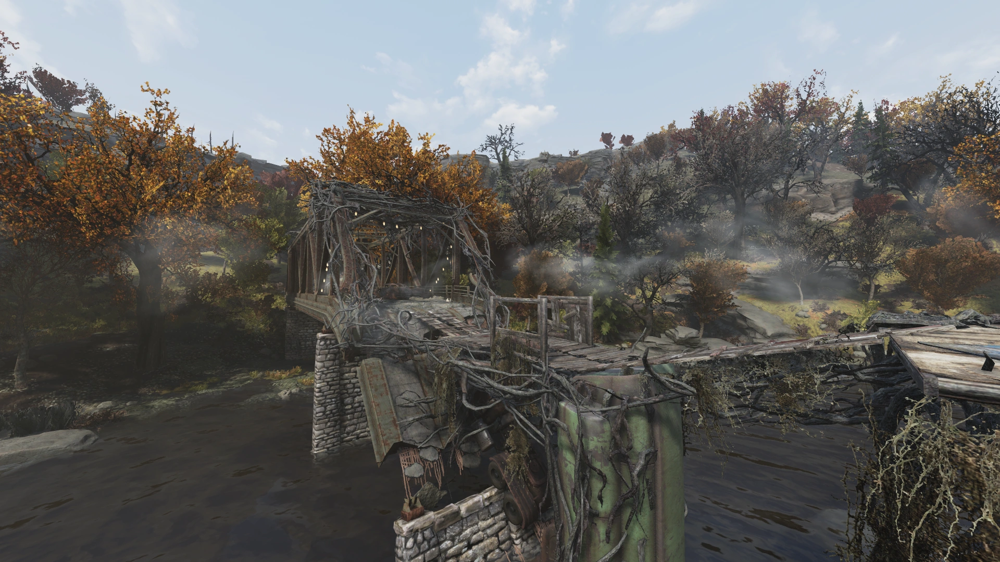
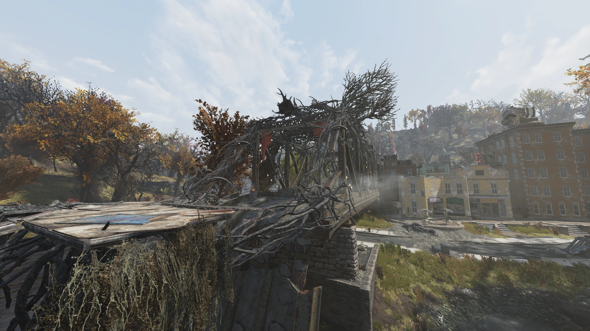
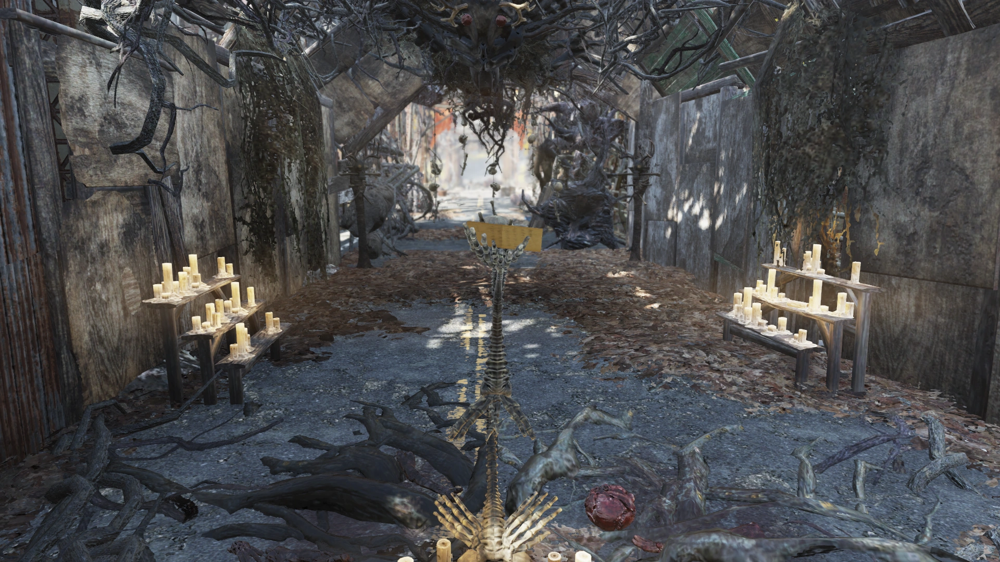
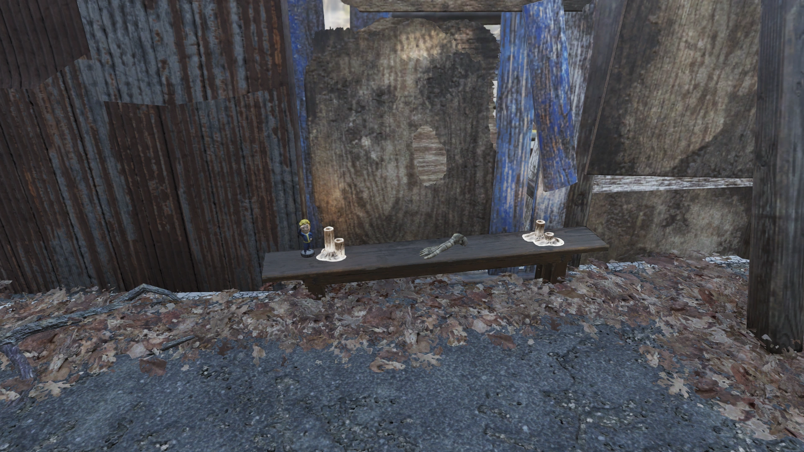

North Road Bridge
ノースロードブリッジ（シルバーブリッジ）
概要
ノースロードブリッジは、『Fallout 76』に登場する非マーク地点のロケーションです。
戦前にオハイオ川を渡るための交通橋として使われていた橋で、1967年に崩落した歴史的なシルバーブリッジの跡地に建設されました。
Burning Springsアップデートで完全に再建・拡張され、同名のバーニング・スプリングス地域への入口として機能します。
背景

元々のシルバーブリッジは1928年に建設されたアイバー式吊り橋で、オハイオ川を渡ってガリポリス（オハイオ州）とポイント・プレザント（ウェストバージニア州）を結んでいました。
アメリカ初のアイバー式吊り橋であり、両町のコミュニティに奉仕していました。
1967年12月15日、ラッシュアワーの最中にシルバーブリッジは崩落。
31台の車両がオハイオ川に転落し、46人が命を落としました。
この惨事を受け、翌年には連邦議会が全米橋梁検査基準（National Bridge Inspection Standards）を採択し、同様の悲劇を防ぐための法整備が進みました。
ノースロードブリッジはシルバーブリッジの代替として建設され、崩落の犠牲者を記念する銘板が設置されました。
しかし2102年までに、この代替橋自体も崩壊してしまいます。
2103年、帰還した翼ある者の信者たち（Cult of the Mothman）がポイント・プレザント側の橋の入口を大きな祭壇に改造しました。
2105年には、カルティストたちが橋の通路を開放し、崩壊した橋の端に木製のプラットフォームを追加して拡張しました。
橋の再建が完了すると、ファーザー・ルーカスの指揮のもとカルティストたちは西方への拡大を目指しましたが、ラスト・キングの軍団とチェックポイント・キャニオンの存在によってすぐに阻まれることになります。
注目アイテム
- Cultist announcement（ノート）Burning Springs
橋の中央の祭壇、スケルトンの手の中 - Vault-Tec ボブルヘッド（確率出現）Burning Springs
橋の北側のベンチの上
ノート
Cultist announcement（カルティストの告知）
橋の中央の祭壇、スケルトンの手の中で入手可能（Burning Springs）
現実世界のシルバーメモリアルブリッジ

ゲーム内のノースロードブリッジは、現実世界のシルバーメモリアルブリッジをモデルにしています。
シルバーメモリアルブリッジは、1967年に崩落したシルバーブリッジの代替として建設されたカンチレバー橋です。
1968年に建設が開始され、崩落からちょうど2年後の1969年12月15日に開通しました。
全長2,800フィート（約850m）で、USルート35号線を通してオハイオ川を横断し、ウェストバージニア州ヘンダーソンとオハイオ州ガリポリスを結んでいます。
通行料は無料で、制限速度は55mph（約88km/h）です。
元々のシルバーブリッジが崩落した原因は、アイバーチェーンの設計にありました。
各チェーンリンクがわずか2本のアイバーで構成されており、冗長性がほぼゼロでした。
1本のアイバーに橋を分解しなければ検出できない微小な欠陥があり、当初の設計よりも重い交通荷重と不十分なメンテナンスが重なって崩壊に至りました。
この教訓から、代替のシルバーメモリアルブリッジはより安全なカンチレバー設計が採用されています。
2024年現在もシルバーメモリアルブリッジは現役で使用されており、チャールストン（WV）と南部・中部オハイオを結ぶ重要な交通路となっています。
備考
- 橋の名前は『Fallout 76 Vault Dweller's Survival Guide』およびゲームファイルのレイヤーレコードで「ノースロードブリッジ」と呼ばれています。「シルバーブリッジ」の名は記念碑上で1967年に崩落した歴史的な橋を指しており、現在の橋の名前としては使われていません。ただし、『Welcoming Committee』クエストでは「シルバーブリッジを渡れ」という目標テキストが使用されています。
- 元々、崩壊した橋の下の川底に直立したクリスマスツリーが見られましたが、現在は撤去されています。
- オハイオ川沿いに見えない壁があり、バーニング・スプリングスと森林地帯を分断しています。現在、ファストトラベルを使わずに2つの地域間を移動するには、ポイント・プレザントのシルバーブリッジを使用するか迂回する必要があります。
登場作品
ノースロードブリッジ（旧シルバーブリッジ）は『Fallout 76』にのみ登場します。
ギャラリー
リリース時

Wastelanders


Burning Springs




ノースロードブリッジは、現実と虚構が最も深く重なり合うFallout 76のロケーションの一つです。
1967年のシルバーブリッジ崩落は、46人の命を奪った実際の悲劇であり、アメリカの橋梁安全基準を根本から変えた事件でした。
そしてこのポイント・プレザントは、崩落前に目撃されたとされる「モスマン」の伝説の地でもあります。
ゲーム内では、その跡地に建てられた代替橋がまた崩壊し、さらにモスマンを崇拝するカルティストたちの拠点となっている——現実の悲劇、都市伝説、そしてFallout世界の終末後のストーリーが、この一本の橋の上で交差しています。
Burning Springsアップデートで橋が再建され、新地域への「門」となったことで、この場所は単なる記念碑から、アパラチアの未来を切り開く象徴へと変わりました。
This article was created by translating and editing North Road Bridge from Nukapedia: The Fallout Wiki.
Licensed under the Creative Commons Attribution-Share Alike License (CC BY-SA 3.0).
コミュニティ維持のため、寄付を受け付けております。
> COMMENTS